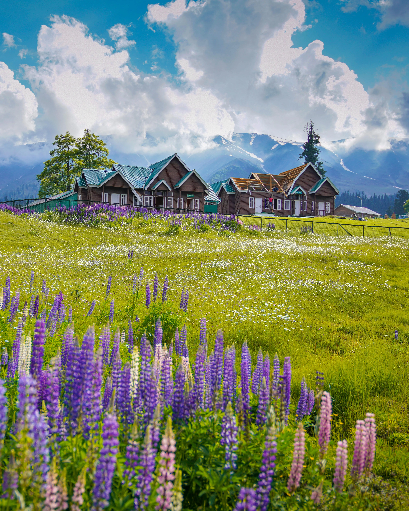
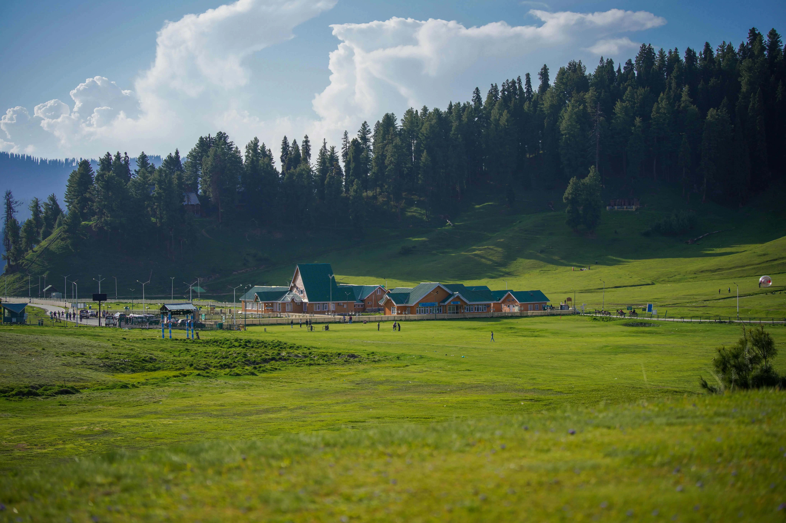
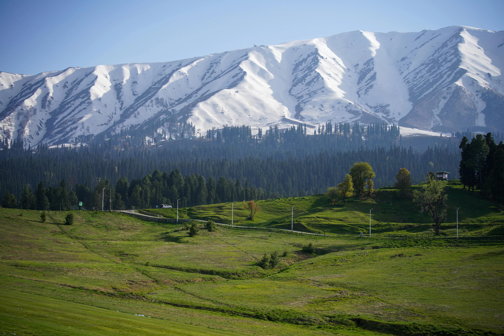
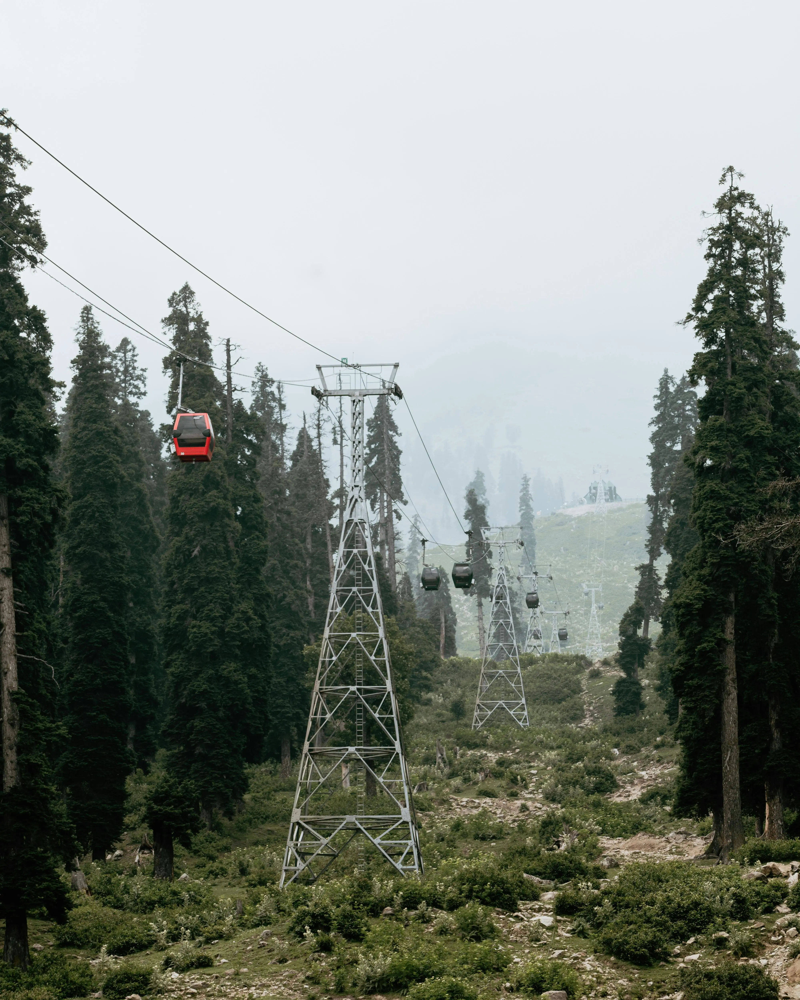

Photography
A Glimpse of Gulmarg
Snow-draped meadows in winter, wildflower carpets in summer — Gulmarg is impossibly beautiful all year round.





Kashmir's Enchanting Adventure Escape — the Meadow of Flowers at 2,730 meters, home to the world's second-highest Gondola and India's premier ski resort.
Gulmarg, famously known as the "Meadow of Flowers," is one of Kashmir's most romantic destinations, offering breathtaking views of vibrant blossoms and snow-capped peaks. Perched at 2,730 meters in the Pir Panjal Range of Jammu & Kashmir, it is a premier skiing destination surrounded by lush meadows and dense evergreen forests.
Gulmarg is home to the world's second-highest Gondola ride — the Gulmarg Gondola — which carries visitors from the meadows up to Kongdori (Phase I) and further to the Apharwat Peak at 14,000 ft (Phase II), offering unparalleled panoramic views of the Himalayan peaks year-round.
A top honeymoon destination, Gulmarg provides a serene and romantic alternative to crowded hill stations like Manali and Shimla. It has also emerged as a serious adventure hub, housing the Indian Institute of Skiing and Mountaineering (IISM), which offers professional training in trekking, mountaineering, skiing, and snowboarding.
With its stunning landscapes, Gulmarg has long been a favourite Bollywood shooting location, adding a cinematic romance to its already captivating charm. In summer, the meadows transform into a carpet of wildflowers; in winter, it becomes India's premier ski resort.
Snow-draped meadows in winter, wildflower carpets in summer — Gulmarg is impossibly beautiful all year round.




From the world's second-highest Gondola to India's best ski slopes, Gulmarg delivers thrills and serenity in equal measure.
Board the world's second-highest cable car for a breathtaking ride to Kongdori (Phase I) and Apharwat Peak at 14,000 ft (Phase II) with jaw-dropping Himalayan panoramas.
India's premier ski destination with pristine powder slopes. The IISM offers professional courses, while private operators cater to beginners and experts alike.
A romantic escape away from crowded tourist spots — Gulmarg's serene meadows, misty peaks, and cozy stays make it one of India's most beloved honeymoon destinations.
Come May to September, Gulmarg's meadows transform into a vivid carpet of wildflowers — buttercups, forget-me-nots, and daisies as far as the eye can see.
Explore the Gulmarg bowl on horseback or trek to Khilanmarg and Alpather Lake for stunning views of Nanga Parbat and the surrounding Himalayan range.
Gulmarg's cinematic beauty has made it a favourite for Bollywood filmmakers for decades. Walk through iconic scenes from classic Hindi films on these very meadows.
Gulmarg is extraordinary in every season — choose based on whether you want snow sports or summer meadows.
Heavy snowfall creates perfect powder conditions for skiing and snowboarding. The Gondola operates to Apharwat and temperatures drop to −10°C. Book well in advance.
The meadows explode with wildflowers, the Gondola runs to both phases, and trekking to Khilanmarg and Alpather Lake is at its absolute best. Temperatures 10°C–20°C.
Fewer tourists, the first dusting of snow on the peaks, and crisp cool air. A great shoulder season with lower prices and peaceful surroundings.
Gulmarg makes a perfect base or stop-over between Srinagar and these stunning Kashmir destinations.
Let us plan your perfect Gulmarg getaway — Gondola rides, ski slopes, meadow treks, and romantic stays all arranged for you.